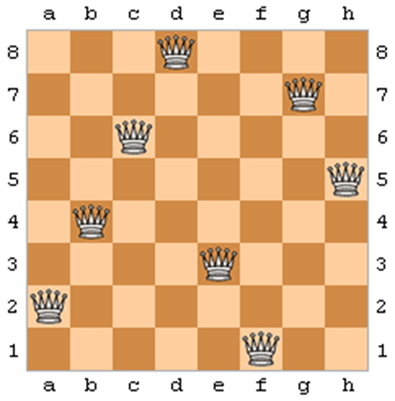
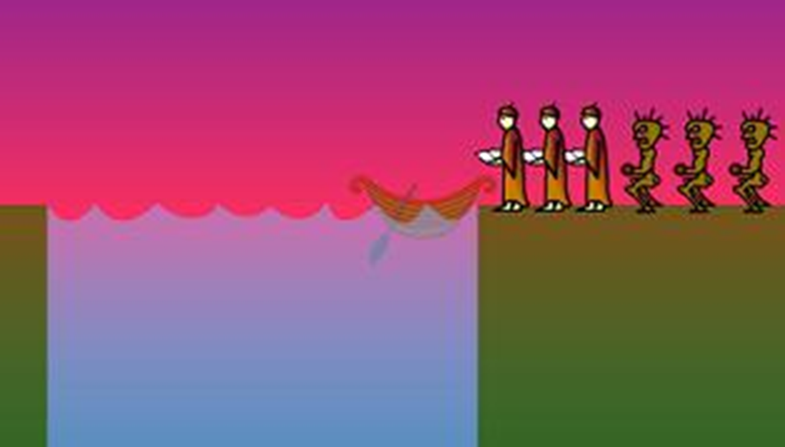
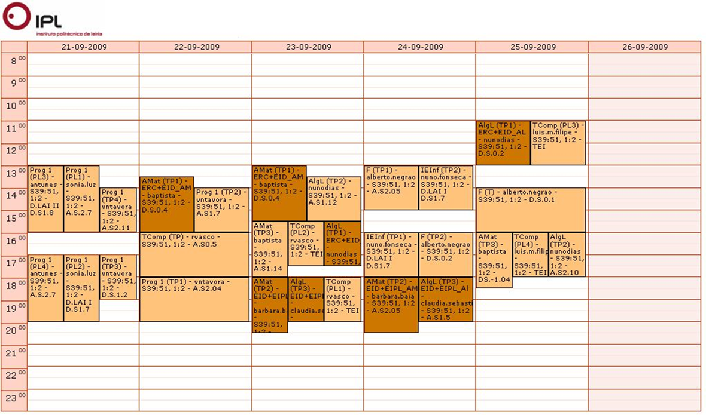
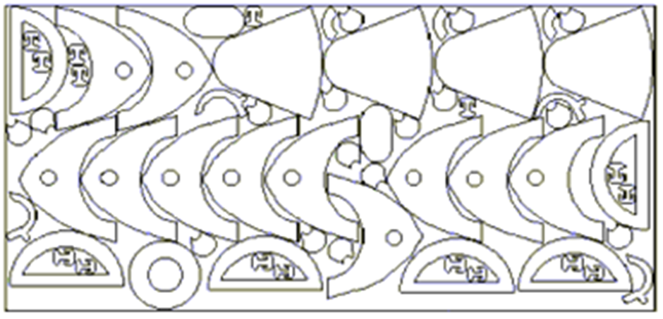
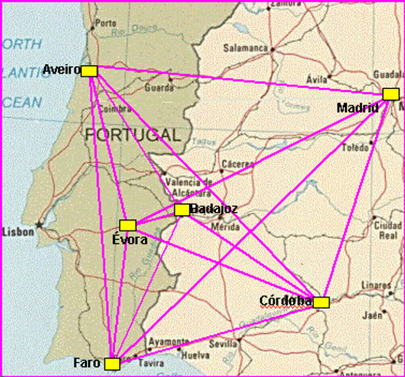
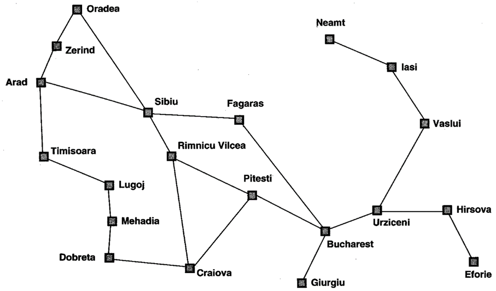
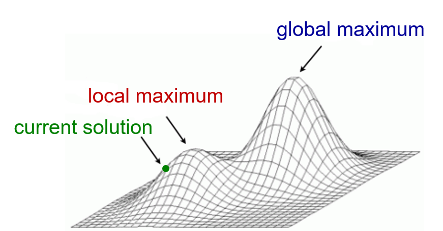

Solving Problems by Searching
Gustavo Reis
Based on chapters 3 & 4 of "Artificial Intelligence: A Modern Approach"
Collaboration:
- Carlos Grilo
- Catarina Silva
- Pedro Gago
Sample Problems
In AI, many problems can be viewed as search tasks. Examples include:
- The 8-Puzzle
- Cryptarithmetic: e.g. FORTY + TEN + TEN = SIXTY
- N-Queens
- Missionaries & Cannibals
- Timetabling & Scheduling
- Space Optimization
- Traveling Salesman Problem (TSP)
- VLSI Design Layout
- Pathfinding (e.g. route planning on maps)
8-Puzzle

Cryptametric
FORTY 29786
+ TEN + 850
+ TEN + 850
-------- --------
SIXTY 31586N-Queens
Missionaires and Cannibals
Timetabling
Space Optimization
Traveling Salesman Problem
VLSI Design Layout
Path Finding
Two Major Problem Types
Type 1: The agent starts from an initial state and seeks a sequence of actions that leads to a goal state.
(Examples: 8-Puzzle, Missionaries & Cannibals, Pathfinding)
Type 2: The agent is searching for a specific configuration of the problem itself. We only need the final “state,” not the sequence of actions.
(Examples: N-Queens, VLSI, Timetabling)
In Type 2 problems, we often use iterative improvement approaches that start with a complete configuration and refine it until we find a satisfactory solution.
Iterative Improvement
In this type of problem, the solution consists in a state with some specific properties and not a sequence of actions (operators) that allows the agent to reach a goal state departing from an initial state.
The algorithms used in these problems start with a complete configuration of the problem (state) and proceed by making modifications to that configuration in order to improve it.
These algorithms belong to a class of algorithms called iterative improvement search.
Iterative Improvement
Iterative improvement algorithms keep a complete configuration of the problem (sometimes called a solution) and change it incrementally to seek better solutions.
- These algorithms are also known as local search methods.
- Unlike standard tree/graph searches, they don’t build paths from start to goal; rather, they refine a single state.
- Examples include Hill-Climbing, Simulated Annealing, Beam Search, Tabu Search, Evolutionary Algorithms, etc.
Nomenclature
In the two previous slides, you may have noticed that the therms state, configuration and solution are used reciprocally.
Depending on the algorithm or the context, the therms node and individual are also used with the same meaning.
In these slides we will use the therm solution.
The “Landscape” Analogy
We can imagine each possible solution as a point in a “landscape.”
- The height/elevation of that point represents the quality (value) of the solution.
- Our goal: find the “global maximum” (best solution) in this landscape.
Challenges: local maxima, plateaus, and ridges can trap simple algorithms like naïve Hill-Climbing.
Iterative Improvement
Let us consider a function $y = f(x_1, x_2, \dots , x_n)$
- $y$ may represent, for example, profit, nº of produced units, etc.
- $x_1, x_2, \dots , x_n$ may represent, for example, the pressure level, temperature, etc.
Suppose that we want to know the compination of $x_1, x_2, \dots, x_n$ values that maximize the value of $y$.
- Please, notice the combination $x_1, x_2, \dots, x_n$ represents a possible solution.
Question: How can we do this?
We will call evaluation function to f since it evaluates the quality of the solution (it is also called the objective function).
Solution Space
Solution space: set of possible combinations of the $x_1, x_2, \dots, x_n$ values
The solution space is also called search space:
Exhaustive search
Approach 1: exhaustive analysis of the solution space.
Problem: the solution space is often too large or even infinite, whereby it is not possible to exhaustively analyse it.
Random Search
Approach 2: search the solution space randomly.
Problems:
- Extremely inefficient.
- It doesn’t take into account any information about already explored solutions.
Differential calculus
Approach 3: differential calculus.
Problems:
- What if $f(x_1, x_2, \dots, x_n)$ is descontinuous, as it is common in real problems?
- Local maxima.
Hill-Climbing
- Start with a random solution.
- Evaluate all “neighboring” solutions (small modifications).
- Move to the neighbor with the best improvement.
- Repeat until no better neighbor exists.
Weaknesses: it can get stuck on local maxima, plateaus, or ridges.
Common remedy: restart from another random solution whenever progress stalls.
Hill-Climbing
A local maximum is a point in the space $x$ for which the value of $f$ is the highest in the neighbourhood of $x$, existing, however, another point outside the neighbourhood of $x$ for which the value of $f$ is largest.
Simulated Annealing
A modified form of Hill-Climbing that occasionally accepts worse moves.
- New solutions are always accepted if they are better.
- Worse solutions are sometimes accepted (with a probability that decreases over time).
- A “temperature” parameter T controls how likely we are to accept worse moves.
By allowing occasional bad moves, Simulated Annealing can “escape” local maxima, but it requires careful tuning of the “cooling schedule.”
Beam Search
An iterative improvement method that keeps a population of solutions:
- Maintain n current solutions.
- Generate successors for each solution (e.g., k new variants per solution).
- Select the best n among all generated successors to form the new population.
Similar to a “multi-track” Hill-Climbing, but still can get trapped in local maxima if the population converges prematurely.
Other Iterative Improvement Methods
- Tabu Search: Maintains a memory of recently visited solutions to avoid revisiting them.
- Evolutionary Algorithms (Genetic Algorithms): Based on selection, crossover, and mutation to evolve better solutions over generations.
- Ant Colony Optimization: Uses paths and pheromone trails for combinatorial optimization.
- Particle Swarm Optimization: Models solutions as moving “particles” that guide each other via velocity and position updates.
- Bees Algorithm: Mimics honeybee foraging strategies.
Conclusion
We’ve seen two main types of problems in AI:
(1) Sequence-of-actions problems.
(2) Configuration or iterative-improvement problems.
Iterative improvement offers a powerful way to handle large or complex search spaces, especially when a single end-state is needed instead of a full path.
Key takeaway: Choosing the right search algorithm depends on the problem type, the size of the space, and the nature of the objective function.
References & Further Reading
- Stuart Russell & Peter Norvig, Artificial Intelligence: A Modern Approach
- Wikipedia:
- “Hill Climbing”
- “Simulated Annealing”
- “Beam Search”
- Additional slides by Gustavo Reis